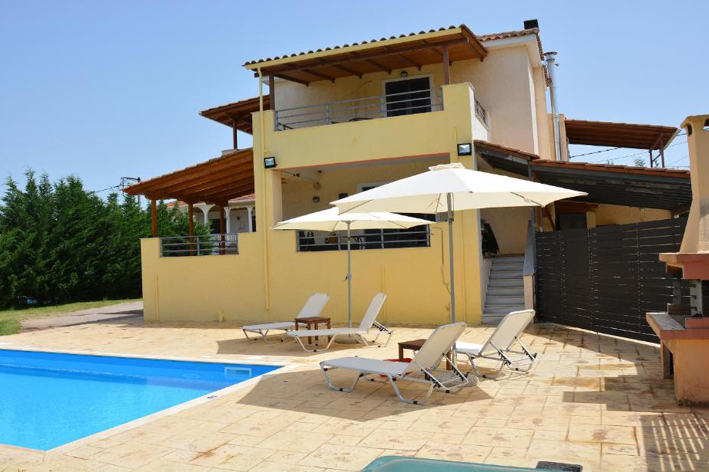
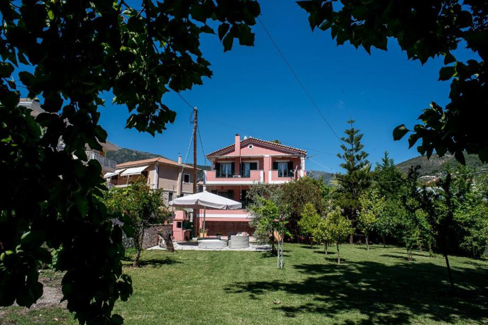
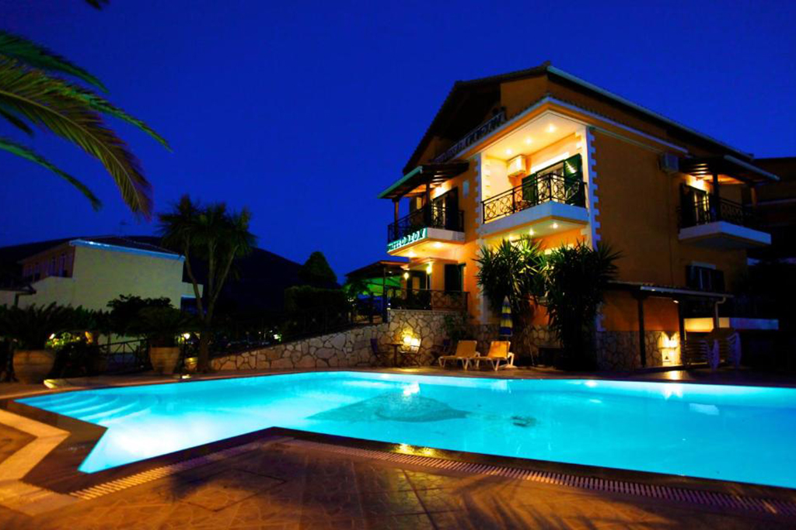

ΠΟΛΗ ΤΗΣ ΛΕΥΚΑΔΑΣ
Η Πόλη της Λευκάδας είναι η πρωτεύουσα και μεγαλύτερη πόλη του νησιού. Βρίσκεται στα βόρεια του νησιού στο κοντινότερο σημείο του, με την απέναντι ακτή της ηπειρωτικής Ελλάδας. Στην είσοδο της Πόλης της Λευκάδας βρίσκεται το μεσαιωνικό κάστρο της πόλης, χτισμένο από τον Βενετό Ορσίνι στις αρχές του 14ου αιώνα. Το κάστρο πήρε την ονομασία του από το εκκλησάκι της Αγίας Μαύρας που βρισκόταν στην ίδια θέση. Η εκκλησία αυτή έδωσε το όνομά της και στο νησί της Λευκάδας για μια μεγάλη περίοδο της ιστορίας. Το κάστρο βρίσκεται στην άκρη του μικρού πορθμού που σχηματίζεται μεταξύ της Λευκάδας και της απέναντι ακτής της Αιτωλοακαρνανίας και περιβάλλεται από τάφρο.
Οι περισσότεροι δρόμοι της πόλης ξεκινούν από τη γέφυρα που συνδέει την πόλη με την απέναντι ακτή και έχουν ακτινωτή διάταξη. Κύριος δρόμος της πόλης είναι η οδός Ντέρπφελντ, πεζοδρομημένη σήμερα, που έχει το όνομα του διάσημου Γερμανού αρχαιολόγου Βίλελμ Ντέρπφελντ, ο οποίος πραγματοποίησε σημαντικές ανασκαφές στη Λευκάδα στις αρχές του 20ου αιώνα. Στην οδό Ντέρπφελντ βρίσκονται ορισμένα από τα πιο αξιόλογα κτίρια της πόλης καθώς και οι πιο καλά διατηρημένες παλιές εκκλησίες. Πολλές παλιές εκκλησίες της πόλης είναι χτισμένες κατά τη διάρκεια του 17ου αιώνα και είναι τεχνοτροπίας Μπαρόκ. Λόγω της μεγάλης σεισμικότητας της περιοχής όλα σχεδόν τα καμπαναριά είναι μεταλλικά.
Διαμονή στη πόλη της Λευκάδας
Villa GerasimoulaΚάντε κράτηση εδώ |
Villa IoliΚάντε κράτηση εδώ |
Nirikos HotelΚάντε κράτηση εδώ |
Villa on the SeaΚάντε κράτηση εδώ |

Village VillasΚάντε κράτηση εδώ |
Ianos HotelΚάντε κράτηση εδώ |
ΝΥΔΡΙ
Το Νυδρί είναι η ντίβα της Λευκάδας. Έχει τον κοσμοπολίτικο αέρα που της χάρισε ο Ωνάσης όταν το 1963 αγόρασε το Σκορπιό που βρίσκεται ακριβώς απέναντί του. Το άγαλμα του Ωνάση στην παραλία του Νυδριού, μαρτυρά την αγάπη των κατοίκων του για το μεγάλο Έλληνα μεγιστάνα.
Απέχει 17 χλμ από την πόλη της Λευκάδας και βρίσκεται στο ανατολικό τμήμα του νησιού. Το Νυδρί είναι χτισμένο μέσα σ΄ένα καταπράσινο κάμπο, κατά μήκος της θάλασσας. Απέναντί του βρίσκεται το νησάκι Μαδουρή με το νεοκλασσικό αρχοντικό του Αριστοτέλη Βαλαωρίτη και το Σκορπιό του Ωνάση. Η παραλία του Νυδριού είναι το πιο δημοφιλές σημείο του οικισμού, καθώς από εκεί μπορεί κανείς να θαυμάσει το ηλιοβασίλεμα. Το Νυδρί προτιμούν και όσοι ταξιδεύουν με σκάφος στο Ιόνιο αφού διαθέτει ασφαλές και σύγχρονο λιμάνι. Η τουριστική υποδομή στο Νυδρί είναι εξαιρετική με πολλά καταλύματα (ξενοδοχεία, δωμάτια, διαμερίσματα, στούντιο), εστιατόρια και ταβέρνες, εμπορικά καταστήματα και μαγαζιά για νυχτερινή διασκέδαση.
Διαμονή στo Νυδρί
Santa MauraΚάντε κράτηση εδώ |
Blue SeaviewΚάντε κράτηση εδώ |
Le Torri VillasΚάντε κράτηση εδώ |
Konstantinos HotelΚάντε κράτηση εδώ |

Villa PalmyraΚάντε κράτηση εδώ |
Aggelos ApartmentsΚάντε κράτηση εδώ |
ΒΑΣΙΛΙΚΗ
Το παραθαλάσσιο χωριό της Βασιλικής βρίσκεται στο νότιο τμήμα του νησιού της Λευκάδας, σε απόσταση περίπου 22 χλμ. από το Νυδρί και περίπου 38 χλμ. από την πόλη της Λευκάδας. Η περιοχή της Βασιλικής ουσιαστικά αποτελείται από δύο τμήματα, το χωριό της Βασιλικής που βρίσκεται κοντά στο λιμάνι και την περιοχή Πόντι η οποία αναπτύχθηκε μεταγενέστερα, ενώ κάπου ενδιάμεσα υπάρχει και οργανωμένο κάμπινγκ για όσους ενδιαφέρονται να κατασκηνώσουν.
Στην Βασιλική και στην Πόντι υπάρχουν πολλά καταλύματα, και ενοικιαζόμενα δωμάτια αλλά και ξενοδοχεία, ενώ θα βρείτε και αρκετές ταβέρνες και εστιατόρια. Το πιο πολυσύχναστο σημείο, τόσο την ημέρα όσο και το βράδυ, είναι το γραφικό λιμάνι της Βασιλικής, όπου θα βρείτε αρκετά τουριστικά καταστήματα με σουβενίρ, αλλά και καφετέριες με παγωτά/γλυκά.
Κατά την διάρκεια της ημέρας υπάρχουν δρομολόγια από το λιμάνι προς την κοντινή παραλία Αγιοφύλι, στην οποία όμως υπάρχει πρόσβαση και μέσω ενός χωματόδρομου που ξεκινάει στην άκρη του χωριού. Κάθε χρόνο surfers από την Ελλάδα και το εξωτερικό δίνουν ραντεβού στην Βασιλική για να απολαύσουν το αγαπημένο τους σπορ, το wind surfing (ιστιοσανίδα) καθώς η παραλία Πόντι θεωρείται ιδανική για το άθλημα λόγω των ανέμων που φυσούν κατά τη διάρκεια του καλοκαιριού.
Διαμονή στη Βασιλική
NefeliΚάντε κράτηση εδώ |

Hotel OdeonΚάντε κράτηση εδώ |
ΟδύσειονΚάντε κράτηση εδώ |
Heliotropia HousesΚάντε κράτηση εδώ |
Akroyiali ResortΚάντε κράτηση εδώ |
KavadiasΚάντε κράτηση εδώ |